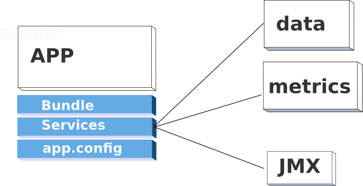

Logscape Applications
Enterprise Level Monitoring. Start monitoring today.
Overview
Logscape executes apps to collect and generate data. An app contains Searches, Workspaces and Data Sources specific to the application.

Each App will execute a service on a schedule defined in a bundle file. Normally this service will collect data from various sources or it will generate its own.
Logscape collects the output of each service and stores it in the following folder
./work/MyCustomApp-1.0/13Sep10/service1.out
collects the results of the service, indexes the data and prepare s it for analysis and visualization
App Components
- Bundle - Is an xml file that contains a Service descriptor. You can run vbScripts, shell and groovy scripts from here. You can also run binaries.
The schedule is defined using .
In the example below, UNIX_IO_wHost_wSTAMP will run io.sh every 60 seconds
<Service> <name>UNIX_IO_wHOST_wTSTAMP</name>
<resourceSelection>osName notContains WINDOWS</resourceSelection> <fork>false</fork> <background>true</background> <instanceCount>-1</instanceCount> <pauseSeconds>60</pauseSeconds> <script>bin/io.sh</script></Service>
- Services - are the scripts or programs that are execute for your service. These can be any file you like as long as it can be executed by your Operating System.
The UnixApp has the following services:
- io.sh
- cpu.sh
- mem.sh
- ps.sh
- app.config - This file contains all the custom Searches, Workspaces, Datatypes and Datasources that the App needs to work. You can have as many config files as you like in your App